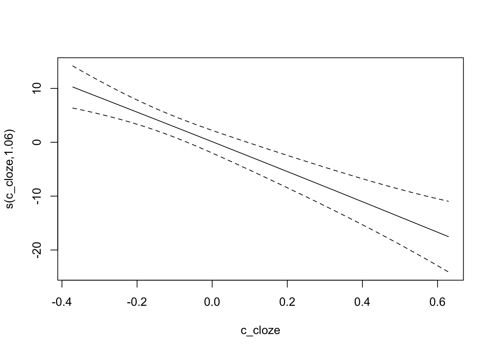
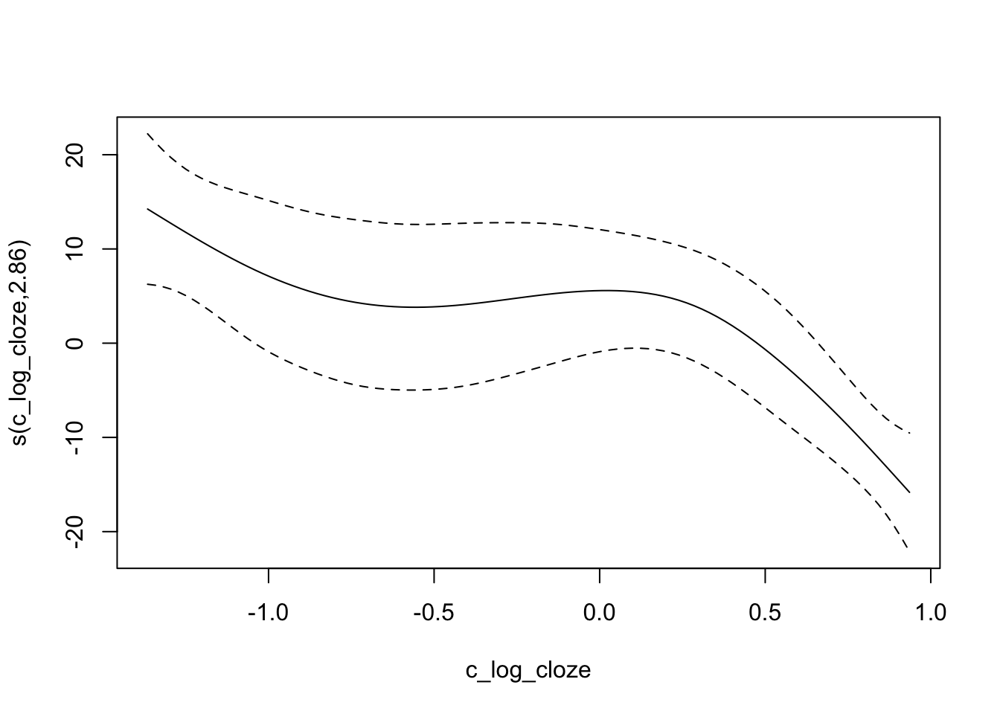
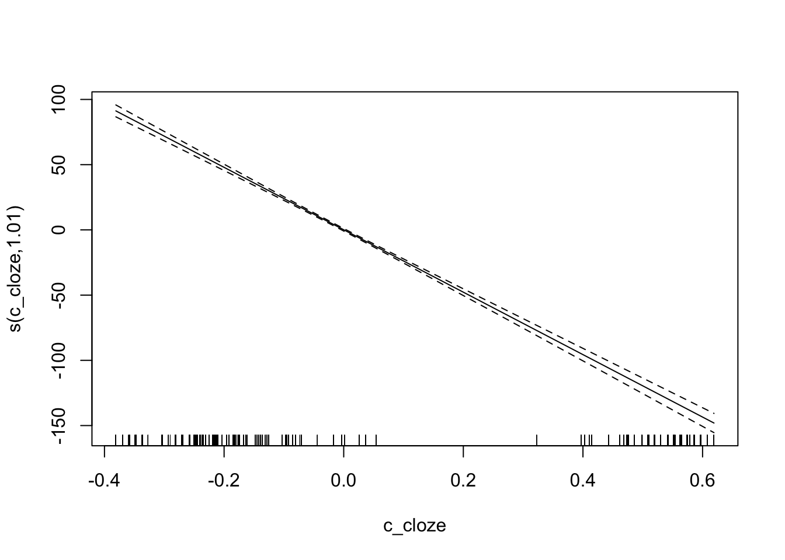
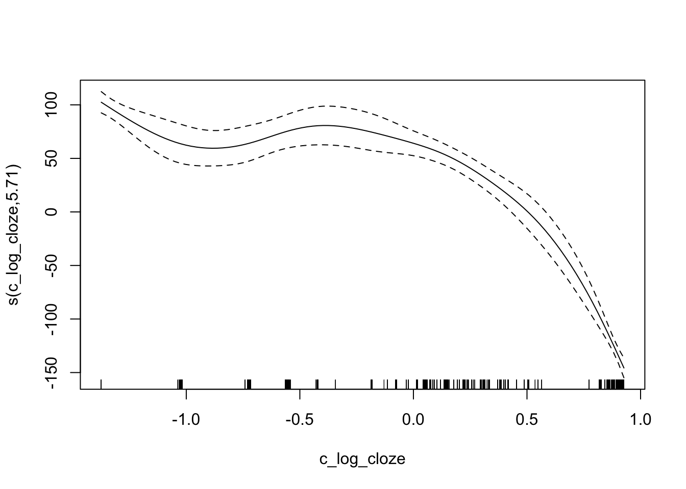

6 Open peer review
6.1 Part 1
Natural compound screening predicts novel GSK-3 isoform-specific inhibitors
View ORCID Profile_Firdos Ahmad, Anamika Gupta, Hezlin Marzook, James R. Woodgett, Mohamed A. Saleh, Rizwan Qaisar
doi: https://doi.org/10.1101/2024.04.22.590490
This study screened 70 natural compounds to identify isoform-specific inhibitors of glycogen synthase kinase-3 (GSK-3), which is implicated in various diseases. Using in silico docking and biochemical assays, two compounds—Psoralidin and Rosmarinic acid—were found to inhibit GSK-3α and GSK-3β, respectively. Psoralidin showed stronger inhibition of GSK-3α (IC50 = 2.26 µM), while Rosmarinic acid was more effective against GSK-3β (IC50 = 2.24 µM). These findings suggest their potential as targeted GSK-3 inhibitors for treating cardiovascular, metabolic, and neurological disorders.
library(gt)
library(tidyverse)
data <- data.frame(
"Transparency criteria" = c("Study Purpose", "Data Availability Statement", "Data Location", "Study Location", "Author Review", "Ethics Statement", "Funding Statement", "Code Availability"),
"Defenition" = c("A concise statement in the introduction of the article, often in the last paragraph, that establishes the reason the research was conducted. Also called the study objective.",
"A statement, in an individual section offset from the main body of text, that explains how or if one can access a study’s data. The title of the section may vary, but it must explicitly mention data; it is therefore distinct from a supplementary materials section.",
"Where the article’s data can be accessed, either raw or processed.",
"Author has stated in the methods section where the study took place or the data’s country/region of origin.",
"The professionalism of the contact information that the author has provided in the manuscript. ",
"A statement within the manuscript indicating any ethical concerns, including the presence of sensitive data.",
"A statement within the manuscript indicating whether or not the authors received funding for their research.",
"Authors have shared access to the most updated code that they used in their study, including code used for analysis."),
"Response type" = c("Binary",
"Binary",
"Found Value",
"Found Value, Binary",
"Found Value",
"Binary",
"Binary",
"Binary"),
"Voldaan?" = c("Ja",
"Ja",
"Data van de tabellen is te vinden onder het kopje supplementary material. Data kan opgevraagd worden van de auteur. Dus, nee",
"Nee",
"Staat beschreven in info/history.",
"Ja",
"Ja",
"Ja")
)
data %>%
gt()| Transparency.criteria | Defenition | Response.type | Voldaan. |
|---|---|---|---|
| Study Purpose | A concise statement in the introduction of the article, often in the last paragraph, that establishes the reason the research was conducted. Also called the study objective. | Binary | Ja |
| Data Availability Statement | A statement, in an individual section offset from the main body of text, that explains how or if one can access a study’s data. The title of the section may vary, but it must explicitly mention data; it is therefore distinct from a supplementary materials section. | Binary | Ja |
| Data Location | Where the article’s data can be accessed, either raw or processed. | Found Value | Data van de tabellen is te vinden onder het kopje supplementary material. Data kan opgevraagd worden van de auteur. Dus, nee |
| Study Location | Author has stated in the methods section where the study took place or the data’s country/region of origin. | Found Value, Binary | Nee |
| Author Review | The professionalism of the contact information that the author has provided in the manuscript. | Found Value | Staat beschreven in info/history. |
| Ethics Statement | A statement within the manuscript indicating any ethical concerns, including the presence of sensitive data. | Binary | Ja |
| Funding Statement | A statement within the manuscript indicating whether or not the authors received funding for their research. | Binary | Ja |
| Code Availability | Authors have shared access to the most updated code that they used in their study, including code used for analysis. | Binary | Ja |
6.2 Part 2
- Share the code, not just the data: A case study of the reproducibility of articles published in the Journal of Memory and Language under the open data policy; Paper 2.
- Data is te vinden in: https://osf.io/324jm/files/osfstorage. Code is te vinden in: https://osf.io/324jm/files/osfstorage
- In deze paper hebben de auteurs gekeken naar de reproducibility van verschillende papers. Met deze code is dus geprobeerd dezelfde grafieken te maken en hier dezelfde conclusies uit te trekken. Omdat de gebruikte paper geanonimizeerd zijn, zegt de data verder niks over de onderwerpen van de studie.
- Zie github,
- Veranderingen zijn aangegeven met comments.
Raw cloze probability:
## Loading required package: Matrix##
## Attaching package: 'Matrix'## The following object is masked from 'package:spam':
##
## det## The following object is masked from 'package:S4Vectors':
##
## expand## The following objects are masked from 'package:tidyr':
##
## expand, pack, unpack##
## Attaching package: 'lmerTest'## The following object is masked from 'package:lme4':
##
## lmer## The following object is masked from 'package:stats':
##
## step## Loading required package: nlme##
## Attaching package: 'nlme'## The following object is masked from 'package:lme4':
##
## lmList## The following object is masked from 'package:IRanges':
##
## collapse## The following object is masked from 'package:dplyr':
##
## collapse## This is mgcv 1.9-1. For overview type 'help("mgcv-package")'.## Loading required package: mvmeta## This is mvmeta 1.0.3. For an overview type: help('mvmeta-package').## This is dosresmeta 2.0.1. For an overview type: help('dosresmeta-package').
Log-transformed cloze probability:

The patterns from Fig. 1 hold, the plots seem similar enough.
Trying to reproduce GAMMs analysis. Raw cloze probability:

Log-transformed cloze probability:

The patterns from Fig. 1 hold, the plots seem similar enough.
- 5, very easy.